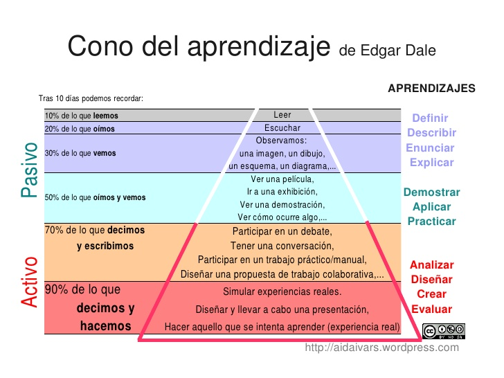

Enseñanza directa y ABP
No hay una única manera de enseñar, como tampoco hay una única manera de aprender. Sin embargo, cada forma de enseñar genera aprendizajes distintos.
Vídeo creado para el MOOC sobre ABP del INTEF, 2014La enseñanza directa
La enseñanza directa se basa en una secuencia transmisiva que podemos resumir en "las tres Pes": presentación, práctica y prueba. El docente presenta unos contenidos, los estudiantes practican con ellos y finalmente se someten a una prueba en la cual, normalmente, o bien tienen que reproducir los contenidos presentados en la primera fase o replicar alguna actividad de la segunda fase.
Y ahora hagámonos juntos algunas preguntas: ¿Cómo podemos aspirar a contribuir seriamente al desarrollo de las competencias con una "enseñanza directa" en la cual los estudiantes no tienen oportunidad de tomar decisiones (autonomía e iniciativa personal), usar las TIC de manera autónoma, crítica y creativa (competencia digital y tratamiento de la información) o relacionarse unos con otros y con otras personas (competencia social y ciudadana)? ¿Cómo podemos desarrollar la competencia matemática sin aplicarla a un problema real? ¿Se puede desarrollar la competencia en comunicación lingüística en silencio y sin entrar en interacción - oral o escrita - con otras personas?
El problema de esta "enseñanza directa" es que suele provocar un aprendizaje memorístico, de corta duración, reiterativo y acrítico. Se espera que el estudiante asimile unos contenidos que el docente posee sin cuestionarse su sentido, su valor o, incluso, su veracidad. Además de que esta metodología dificulta la atención a la diversidad, la clave para buscar alternativas es que la contribución de la enseñanza al desarrollo de las competencias a través de la instrucción directa es muy baja y está supeditada a experiencias complementarias o externas al proceso de aprendizaje en el aula.
Sin embargo, hay otra manera de enseñar. Imagina que el docente propone a sus estudiantes una pregunta, un problema o un reto que deben superar. Para acometer esta tarea, los estudiantes deben encontrar información, procesarla, elaborarla y compartirla; además, los estudiantes deben aplicar esta información a la resolución de un problema o un reto real (o, al menos, realista). De esta forma el proceso de aprendizaje es significativo en sí mismo y tiene sentido para los estudiantes, por lo cual mejora su motivación, su actitud y, por tanto, su implicación.
Es decir, hay maneras de enseñar que entienden que aprender no es sólo entender y memorizar sino también buscar, elegir, discutir, aplicar, errar, corregir, ensayar. Hay maneras de enseñar que demuestran que "aprender" puede ser una modalidad de "hacer". Y maneras de enseñar que, está demostrado científicamente, no son efectivas para que los alumnos aprendan.
